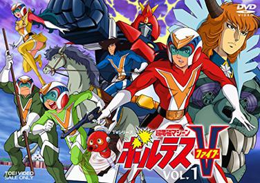

Anime at Cartoons Noon
-
Princess Sarah
Sinubaybayan natin ang pagbabalat niya ng patatas, na cute-an sa tuwing i-iyak si Lotte, at naiinis kay Miss.Minchin at Lavinia, lalo na dun sa mag-asawa na katulong laging pinapagalitan si Sarah at Becky.
-

Voltes V
Bago ang mga Power Ranger na yan. Voltes V muna. Yung tipong bawal sila magkulang kasi hindi mabubuo yung robot. Sandamakmak din ang armas ng robot na ito, lalo na yung ispada niya, pero ang pinaka-astig talaga sa lahat ay yung kanta nito
Tatoe arashi ga futou tomo Tatoe oonami areru tomo..
. -
Tom Sawyer
Humayo ka, kaibigang Tom Sawyer, maglakbay kung saan mo man naisin
Si Tom at si Jack talaga ang sumasalamin sa kabataan pinoy, na maging masaya lang sa buhay at gawin ang mga bagay na makapagpapasaya sayo. -
Cedie ang munting prinsipe
Eto talaga nakakaiyak to, lalo na nung namatay yung lolo niya. Huhu, grabe sinusubaybayan ko ito tuwing umaga.
-
Doraemon
Si Doraemon at ang kanyang mahiwagang bulsa, na kahit ano ata pwedeng makuha sa bulsa niya, ang a-astig din ng mga gadgets niya na pinapagamit kay Nobita
Lampa
para makabawi sa mga bully niyang kaibigan na si Damulag at SuneyoNguso
. PS: Ang ganda ng boses ni Damulag haha. -
Slum Dunk
Ang dakilang gunggong na si Hanamichi Sakuragi at ang karibal niya sa puso ni Ayako na si Rukawa. Siyempre hinding-hindi natin makakalimutan ang 1 week 3 points shot ni Boy Labo. Flashback pa more!!
-
Dragon Ball
Isa ka rin ba sa mga nagtaas ng kamay noong humingi si Goku ng tulong sa sanlibutan para talunin si Majin Boo? Pakitaas lang ang mga kamay oh! Sabay-sabay, at sabihin kay Majin Boo na
Kainin mo tong Spirit Ball!!!!
-

Naruto
Isa sa pinakapaborito kong Anime, dito na nabuksan ang pagiging Ninja natin, aminin mo ginaya mo rin ang mga hand-signs technique nila, pero mahirap kaya yung takbo nalang ang ginawa mo, na akala mo mapapabilis talaga nito ang pagtakbo mo.
-
One Piece
Ang walang kabusugan na si Luffy, at ang kanyang grupo ng pirata. Itong anime na ito ay sumisimbolo sa tunay na pagkakaibigan, hanggang ngayon di pa tapos eh, mamatay nalang ata ako di pa to matatapos.
Palabas Noon
-
Sineskwela
Ito ang laging inaabangan ng mga bata na mahihilig sa siyensa, iba't-ibang bagay ang ating natutunan mga hayop, planeta, at tungkol sa kapaligiran.
-
Math Tinik
Ang palabas na ito ang nagpa-intindi sa atin ng matematika, pinadali nila ang matematika gamit ang imahinasyon.
-
Bayani
Itong palabas na to, maganda talaga to, tungkol ito sa buhay ng mga bayani, mga kultura ng Plipino, mga sinaunang gamit sa larangan ng sining, mga sinaunang armas na ginamit sa gera at ang pinaka importante ang kasaysayan ng pilipinas.
-
Wansapanataym
Pinaniwala tayo na ang mga pangarap natin sa buhay ay maaring magkatotoo, basta maging mabuting tao lang tayo. Maraming aral ang mapupulot sa palabas na ito.
-
Batibot
Pagmulat ng mata, Langit nakatawa Sa batibot, Sa batibot Tayo nang magpunta Tuklasin sa batibot Ang tuwa, ang saya Doon sa batibot Tayo na, tayo na Mga bata sa batibot Maliksi, masigla.
Naalala mo pa? Oo Matanda ka na!. haha -
Magandang Gabi Bayan
Usong-uso ito tuwing sasapit ang undas, kapag ala-syete na ng gabi mag hahanda ka na ng kumot at pantakip sa mata, dahil sa mga sobrang nakakatakot na istorya.


Disclaimer
No copyright infringement intended, we do not own the images nor we take credit for it, we are not selling the website or making profits from it and it is used only for educational purposes.
Social Media
To share your throwback memories with me.
You can also follow me on: